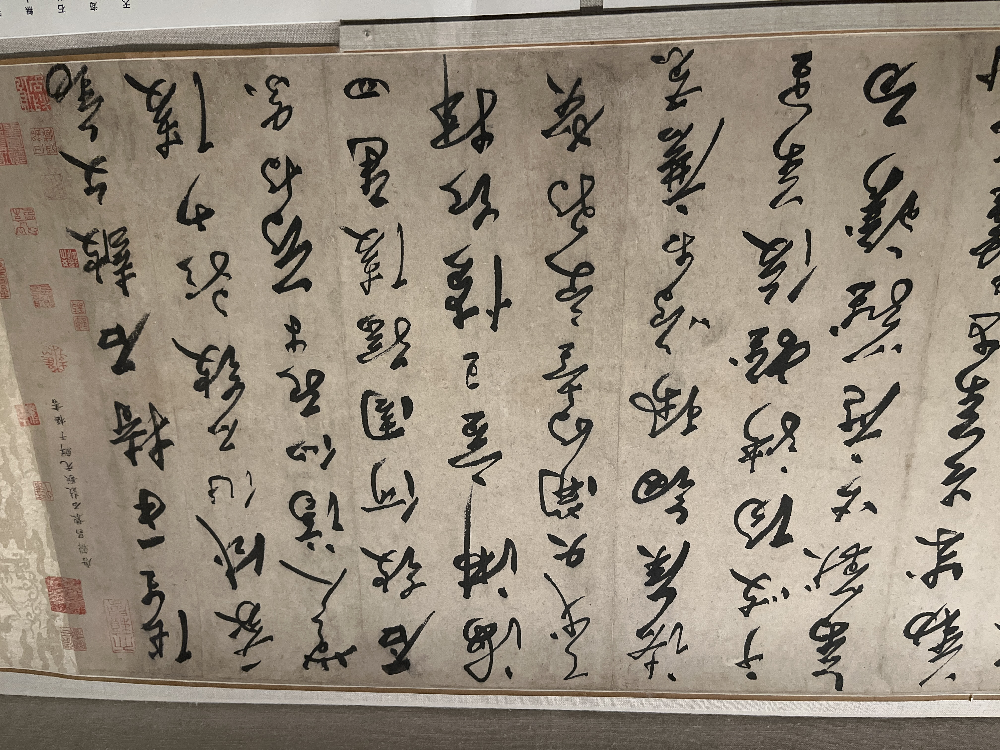

今天nyc大降温，-10度左右，准备的衣服是零度附近的，所以漫步街头十分折磨。上次这般冷，还是冬天爬雪山的时候。在MET中逛饿了，出去吃点路边摊果腹时，被冻得一边跺脚一边海塞，惨兮兮的。
晚饭是牛肠GopChang store，又是一家韩餐，不过这个就略为一般。虽然形式很fancy，当面烤，食材也新奇，但是过于油腻了，配菜也有种淀粉下饭的感觉，不够丰富吧。
最后在去机场的路上还是被小小地震撼。体验了美国的火车，妈呀，人是真多啊，我还帮着一个黑女抬婴儿车，超乎想象的重，也不知道她还装了些啥。当我表示可以来个人帮我时，她居然说就几节楼梯，赶紧下去，有点意料之外，不像是自己孩子一般，不担心意外。去机场的shuttle train也是，门关了也往里面挤，就硬挤啊，NYC真生猛啊。
瓷器根据温度的分类
Chinese Ceramic Terminology:
Ceramics play important historical and cultural roles in all cultures; as a result, a range of terms, in multiple languages, is used to define ceramics and the various methods used to embellish them. In general, ceramics are catalogued in terms of the type of clay used to make them, and by the different materials and / or techniques that decorate them. The clay is referred to as the body, paste, bisque, or biscuit. In Chinese writings, the types of clay are subdivided into two broad categories: low-fired ceramics (tao), and high-fired wares (ci).
A standard Western system, which subdivides the high-fired wares into two categories, is used here.
Low-fired ceramics
Earthenware fires at a temperature of 1000 to 1150 degrees
Celsius. It is not watertight, chips easily, and is usually buff or red in color.
High-fired ceramics
Stoneware fires at temperatures from 1100 to 1300 degrees Celsius. It is watertight, does not chip easily, and is buff, ivory, gray, or brown.
Porcelain fires at 1200 to 1400 degrees Celsius.
Porcelain is white and is composed of a combination of two materials: a clay called kaolin and a feldspathic rock known as petuntse.
Petuntse is a transliteration of the Chinese baidunzi (little whi brick). The word porcelain comes from the Italian porcellana (cowrie shell) and developed as a reference to the parallels betwee the translucence of the shell and that of porcelain.
Both stoneware and porcelain are usually covered with a glaze, a liquid substance made of clay that vitrifies, or be nes glass-like, when it is fired onto a body. Stoneware is som covered with slip- the glaze. Porcelain is painted with pigments such as cobal blue under the glaze and colored enamels over it

Celadon: 青瓷
Celadon: 青瓷
Celadon: Green-Glazed Chinese Ceramics,
4th-14th Century
Multiple reasons are adduced for the Western use of the term celadon to define Chinese ceramics covered with lush green glazes. A popular theory is that celadon first appeared in France in the seventeenth century as the name of the shepherd who wore green ribbons in Honoré d’Urfé’s pastoral romance L’Astrée. Another is that the term is a corruption of Saladin, an Egyptian sultan who sent forty pieces of this type of ceramic to a Syrian ruler in the late twelfth century. A third suggests that the name is based on the Sanskrit sila (stone) and dhara (green).
In China, ceramics with green glazes are catalogued by names based on historical terms used for the geographic locations of the kilns that produced them. Green-glazed wares first developed in south China in the province of Zhejiang that had long been known as Yue. The southern tradition of using an iron oxide to create green glazes spread to north China in the sixth century as part of the widespread development of ceramic technology at that time. Green-glazed wares were among the first used for domestic dining and drinking, and the Yue kilns that started the tradition were ranked among the best vessels for the appreciation and consumption of tea. Wares with green or blue-green glazes, such as Ru, Jun, Guan, and Ge, were produced for the use of the court during the eleventh, twelfth, and thirteenth centuries. Others, such as Longquan wares, were valuable trade items. As was true of the brown- and black-glazed ceramics also produced in China from the eighth to the fourteenth century, green-glazed ceramics disappeared in China after the flowering of blue-and-white wares in the fourteenth century. The tradition of using such glazes was revived in China in the late seventeenth and eighteenth centuries, and celadon glazes are found in many twentieth-century traditions, particularly those in Korea, Japan, and Thailand.
东晋 4-5century 越窑
梁陈502-589 5-6 世纪
This elegant set may represent one of the first examples anywhere in the world of a cup and saucer used for drinking tea. It is decorated with carefully carved lotus leaves. Originally symbolic of love in early folk songs, lotuses are associated with purity in Buddhist art.
北宋 钧窑 below
明朝 1368-1644 钧窑
Numbered Jun ware jardinières are highly appreciated for their elegant forms and specially variegated glaze. Varied from light blue and purple to rosy-red, no two pieces are completely the same, considering these subtle changes of color. They were not only perfect for growing plants, but also became ornamental antiques and works of art on display shelves in the following centuries.
南宋 1127-1279 龙泉窑
When needed, the Longquan kilns, known primarily for ceramics with olive or gray glazes, also produced high-quality wares for the court in Hangzhou, particularly in the twelfth century, when demand for such wares peaked. Both the blue color of this glaze and the slight cracking or crazing on the surface illustrate the ability of potters working at Longquan to make works that conformed to court taste.
元代 龙泉窑
China, Yuan dynasty (1271-1368), 13th-14th century
Stoneware with celadon glaze and biscuit relief (Longquan ware)
This dish illustrates a characteristic type of Longquan celadon that emphasizes decoration in the biscuit. After firing, the rich content of iron in the unglazed part was oxidized into orange red, which was smartly used to represent two fish’s fresh colors. The glassy surface of celadon glaze is just like a pond of water for these two fish to swim in.
清代 葫芦 景德镇 above
Dish with Design of Dishes
Japan, Edo period (1615-1868), ca. 1760
Porcelain painted with cobalt blue under celadon glaze (Hizen ware; Nabeshima type)
青花瓷
元青花
元代（1271年－1368年）烧制的一种青花瓷器，以其独特的艺术风格和技术成就而闻名。青花瓷是一种以白瓷为底，用钴蓝色料在坯体上绘画纹饰后，再覆盖透明釉，经高温一次烧制成的瓷器。
Bottle with lotus pond
China, Yuan dynasty (1271-1368), mid-14th century Porcelain painted with cobalt blue under transparent glaze (Jingdezhen ware)
Introduced with Buddhism in which it is symbolic of purity, the lotus is an important flower in Chinese art and symbolizes summer, longevity, elegance, and other virtues.
Plate with fish
China, Yuan dynasty (1271-1368), mid-14th century
Porcelain painted with cobalt blue under transparent glaze
(Jingdezhen ware)
Close examination of the cobalt blue used to paint this dish shows areas of darker blue. Known as “heaped and piled,” this effect is a result of imperfect control of the pigment during firing. This effect disappeared in the early fifteenth century, when potters further mastered the use of this pigment.
Heaped and piled” 是用来描述元青花瓷器中一种常见的装饰效果的术语，指的是青花发色上的浓淡变化，给人一种蓝色颜料堆积的视觉感受。这种效果在元青花瓷器中十分典型，也成为辨识元青花的重要特征之一。
Bottle with peony scroll
China, Yuan dynasty (1271-1368), mid-14th century
Porcelain painted with cobalt blue under transparent glaze (Jingdezhen ware)
The structured surface of this bottle ultimately derives from the Islamic cultures of West Asia. The designs painted on the surface of the bottle also illustrate the complicated ties between China and other regions in the fourteenth century: the patterns on the neck parallel the cloud-collar designs often found in textiles and clothing in China and the Islamic world; the scrolling peonies that decorate the center of the bottle derive from longstanding Chinese traditions; and the stylized lotus petals on the base allude to imagery found in Indo-Himalayan art.
宣德 青花瓷 1369-1644
宣德 青花瓷
Jar with dragon
White porcelain painted with cobalt blue, a style that first flourished in China in the fourteenth century, is arguably the most important development in the history of ceramics. Commissioned by the court, this spectacular storage jar, made in the kilns in Jingdezhen, is dated to the rule of the Xuande emperor by an inscription on its shoulder. Its painted decoration features an animated dragon undulating across a sparsely clouded sky.
郑和下西洋 明 景德镇 青花瓷
The theme of winged animals, in this case a horse, an elephant, a mongoose, a fish, a rabbit, and two cervids, was most likely inspired by the extraordinary court-sponsored maritime expeditions of the early fifteenth century, in which a Chinese fleet, under the direction of Zheng He (1371-1433), reached the coast of Africa.
Dish with phoenixes and dragons
China, Ming dynasty (1644-1368), probably Jiajing period (1522-66), 16th century
Porcelain painted with colored enamels over transparent glaze Jingdezhen ware)
Bowl with dragon
China, Ming dynasty (1368-1644), Jiajing mark and period (1522-66), mid-16th century
Porcelain with incised decoration under and colored enamels over transparent glaze Jingdezhen ware)
The five claws of the dragon indicate that this bowl was made for imperial use; the combination of white and green indicates that it was made for use by a low-ranking concubine.
明 万历天启
景德镇青花瓷
The shape of the dish, which alludes to the famed Mount Fuji, indicates that it was commissioned by a Japanese patron, most likely for a meal that accompanied the tea ceremony. The inscription, which discusses roaming with deer and horses in a landscape, is an allusion to a similar phrase in the writings of the Chinese philosopher Mencius
康熙 景德镇
The rich, thick, and glassy red glaze on this vase is one of the most famous types of Kangxi porcelain. It was a revival of 15th-century Ming-imperial red wares. Glowing like fire, the red is recreated with a stronger vibrancy.
清 景德镇 青花瓷
10首诗词在瓶身
技艺进步，颜色可以一起上了
清康熙 overgrazed colored enamels
Many parts on this vase, including roof tiles, rocks, and clothes, are painted with overglaze blue enamel, a technical invention of Chinese porcelain artisans in the late 17th century. Before then, all blue had to be painted with cobalt underglaze before firing, while all other colors were painted overglaze and fired again in a lower temperature. With this invention, all colors could be painted at the same time.
中国古代画展
最古老画之一
五代-北宋。佚名 乞巧图
This painting offers a view into the women’s quarters of a palace as a lavish banquet is being prepared. At center is a table laden with luxurious bronze, ceramic, and gold objects.
Above, in the rear chamber, the lady of the house is being awakened for the feast. The scene may allude to the love affair between the Tang emperor Xuanzong (r. 712-56) and Yang Guifei, who famously slept all day to arise refreshed at night. Though the costumes and theme are Tang dynasty, the style of the painting is later, from the tenth or eleventh century. This rare early work is treasured not only for its beauty but also because it is one of the oldest surviving Chinese paintings to depict architecture in detail.
耶律楚材
看到小说里面人物的字画还是有种别样的感受的。
A descendant of the Liao imperial family, Yelü Chucai was born in Jin-ruled north China sixty-five years after the Jin conquered the Liao dynasty (907-1125).
Like his father before him, Yelü served the Jin loyally as a scholar-official, and after the Jin fell in 1234 to the advancing Mongols, he offered his counsel to the new rulers of the North. Yelü is remembered for his efforts to mitigate the harshness of Mongol rule in the early years of their dominion over north China. Poem of Farewell to Liu Man is Yelü’s only surviving work and one of the most imposing examples of thirteenth-century calligraphy from north China.
宋濂题跋
Luo Zhichuan
Living under the Mongol Yuan dynasty in the early fourteenth century, Luo Zhichuan participated in a revival of the brush idioms of the Northern Song artists Li Cheng (919-967) and Guo Xi (ca. 1000-ca. 1090). This painting may be read as a bleak commentary on life under the Mongols, for the image of a wintry grove of trees has long been understood as a metaphor for noble men enduring political adversity. Similarly, the two male pheasants on the shore in the foreground symbolize scholars living in reclusion, while the varied pattern (wen) of their plumage is a symbol of literary cultivation (also wen). Luo contrasts their stoic endurance with the agitated movement of dozens of cireling crows-a reference to petty opportunists.
鲜于枢
鲜于枢（1257年－1302年），字伯机，号困学山民，元代著名书法家、文学家、画家。他是蒙古族贵族后裔，因才学卓著，深受元代文人和士人的推崇。
草书石鼓歌
方从义
方从义（约1329年—1394年），字无隅，号雪庵，晚号雪庵道人，元末明初著名画家、诗人，属于“元四家”之外的重要文人画家之一。他的画风独特，尤以山水画著称，深受后世文人画家的推崇。

赵原
赵原，字希远，元代画家，生卒年不详，是元代山水画领域的重要人物之一，与文人画家群体联系密切，属于“元四家”之外的名家。赵原的绘画以山水画见长，受董源、巨然的画风影响，注重笔墨的意趣与山水的幽远意境。

明 刘俊 纳谏图
Official court painters of the Ming dynasty were often called upon to create historical images with targeted meanings.
This painting, which shows an emperor listening patiently to criticism from a loyal official, is one such image. It would have suggested to those who saw it that officials would be treated fairly if they were brave enough to remonstrate with the emperor, though in truth the opposite was often true. The painter Liu Jun enjoyed success at court, rising to the honorary rank of Commander in Chief of the Embroidered Uniform Guard. This work shows Liu’s mastery of the bright, legible figure style that was favored by the Ming emperors for this kind of painting.
元代 佚名
As is the case with many Chinese paintings, the date of this one is difficult to determine. It boasts an impressive suite of colophons by fourteenth-century writers, including two renowned scholar-painters, Ni Zan and Lu Guang. Though the painting itself bears a signature of the tenth- to eleventh-century painter Yan Wengui, based on style it appears to be a copy from the fourteenth or fifteenth century, during or shortly after the time of Ni and Lu. Therefore, it is possible that these colophons were originally made for an earlier painting but later mounted to this work to enhance its value.
仇英 明
仇英（约1498年－1552年），字实父，号十洲，江苏太仓人，明代中期著名画家，与沈周、文徵明、唐寅合称“吴门四家”
Qiu Ying was a gifted and versatile painter in the elite milieu of the city of Suzhou during the mid-Ming dynasty. Not only did he master the reserved styles of his scholar-artist contemporaries, but he could also paint in the highly polished manner of a professional.
Because of his wide-ranging skills, he was often called upon to make copies of earlier paintings, such as the example you see here, which is based on a work from the Tang dynasty. It depicts the deities of the Five Planets, which correspond to the five primary elements-wood (Jupiter), metal (Venus), earth (Saturn), fire (Mars), and water (Mercury)-and the twenty-eight constellations of the Chinese zodiac. This painting bears the signature and seals of Qiu Ying but may be a later copy.
文征明

Wen Zhengming was one of China’s defining calligraphers. A passionate art collector and student of the past, Wen developed signature manners across different script types of calligraphy, from the formality of regular script to the ease of semicursive to the swashbuckling confidence of cursive. This late work shows Wen’s working in his highly ordered small regular script, a perfectly balanced combination of structure, angularity, and fluidity.
明陆治 虎丘图
Ming aynasty (1500-1044), aatable l0 10005
Handscroll; ink and color on paper
Artists in sixteenth-century Suzhou often painted the scenic sites of their hometown. Such paintings were intended to celebrate the beauty of Suzhou-it was then, as now, one of the most beautiful cities in the world-but also to highlight the layers of historical and religious significance that made these places famous. This intimate painting depicts Tiger Hill, a destination northwest of the city that was the frequent subject of poems and paintings by local literati who traveled there in search of inspiration and relaxation. Lu Zhi, one of the leading scholar-painters of his day, used his signature technique of layering angular brushstrokes to build up mountain forms, creating an almost cubist effect. The long colophon is a set of poems about Tiger Hill by the Song-dynasty poet Jiang Tang (980-1054), here transcribed by the scholar Xu Weiren (1788-1855).
徐扬
徐扬（约1712年－约1780年），字云亭，号北郭，江苏宜兴人，清代宫廷画家、人物画与界画大师。他以工笔画著称，作品多描绘重大历史事件和民俗风貌，兼擅人物、山水、花鸟、建筑等题材。徐扬是清代宫廷画坛的重要代表之一，尤其以《姑苏繁华图》闻名于世。
乾隆南巡图 on silk

This scroll is the fourth in a set of twelve commissioned by the Qianlong Emperor to document his first tour of southern China, made in 1751. The scroll portrays Qianlong inspecting flood-control measures along the Yellow River. He stands beside the spillway that directs the clear blue waters of the Huai River into the silt-laden Yellow River, diluting its sediment content and helping to flush the silt out to sea. The remainder of the scroll depicts various flood-prevention techniques, including double-sluice gates to reduce the force and flow of water into the Grand Canal, pounded-earth and stone-faced levees, and large bundles of sorghum used for repairing breaches in the dikes.
仙山阁楼图